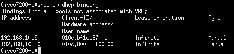
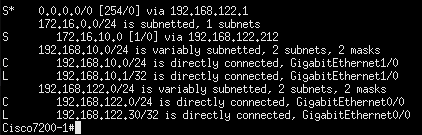
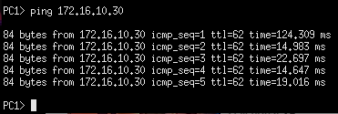
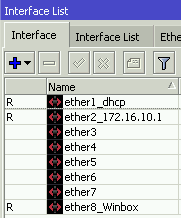
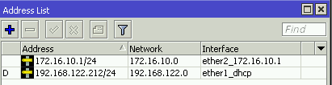
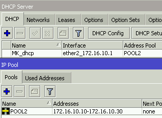
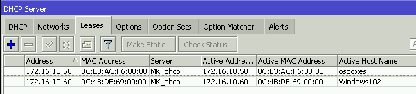
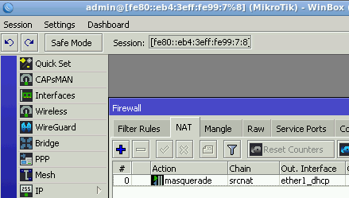
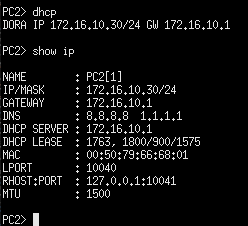
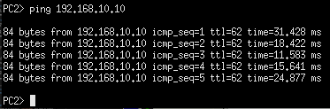

Configuración de los routers
Router Cisco
- Configuración de las interficies
Primero configuraremos la interficie g0/0 para que tenga IP por dhcp
config t
interface g0/0
no shutdown
ip address dhcp
ip nat outside
exit (X2)
write
copy run start
En la interficie g1/0 la configuraremos con una IP estática
config t
interface g0/0
no shutdown
ip address 192.168.10.1 255.255.255.0
ip nat inside
exit (X2)
write
copy run start
Y ya tendriamos las dos interficies con IPs, para ver la configuración de las interficies y comprobar que lo hayamos hecho bien usaremos el siguiente comando:
show ip interface brief

- Configuración DHCP
Vamos a crear un "POOL" ,que es el conjunto de direcciones que vamos a usar para asignarselas a los VPCs, y a configurarlo para que de las direcciones.
config t
ip dhcp pool POOL1
network 192.168.10.0 255.255.255.0
dns-server 8.8.8.8
default-router 192.168.10.1
exit
ip dhcp expluded-address 192.168.10.1 192.168.10.9
ip dhcp expluded-address 192.168.10.31 192.168.10.254
write
copy run start
Donde:
- network --> es la direcion de red en la que vas a hacer el pool
- dns-server --> resolucion de nombres
- Yo he puesto el de google, si tienes uno propio puedes ponerlo
- default-router --> es la direccion por la cual saldrán
- en mi caso es la direccion
192.168.10.1
- en mi caso es la direccion
-
ip dhcp excluded-address --> son las direcciones ip que NO vamos a asignar a los equipos
- Yo queria asignar de la
192.168.10.10a la192.168.10.30por lo que he excluido todas las demás
- Yo queria asignar de la
-
Reserva de direcciones IP
Para reservar direcciones IP tendremos que crear un pool y decirle cual es la ip que queremos asignar al igual que la dirección MAC del equipo al cual le asignaremos dicha dirección reservada.
config t
ip dhcp pool UbD
host 192.168.10.50 255.255.255.0
client-identifier 010c.bf1c.8700.00
default-router 192.168.10.1
dns-server 8.8.8.8
exit
copy run start
Donde:
- UbD --> es el nombre que le asignamos al pool
- dns-server --> resolucion de nombres
- Yo he puesto el de google, si tienes uno propio puedes ponerlo
- default-router --> es la dirección por la cual saldrán
- en mi caso es la
192.168.10.1
- en mi caso es la
- host --> es la dirección que queremos reservar para un equipo
- Yo queria asignar de la
192.168.10.50y la192.168.10.60
- Yo queria asignar de la
- client-identifier --> es la dirección MAC con un
01delante de esta y agrupada en 4, menos los 2 ultimos.
Haremos los mismos pasos para todos los equipos que queramos reservales direcciones. En mi caso yo lo queria para el Ubuntu Desktop y para el Windows 10.
config t
ip dhcp pool W10
host 192.168.10.60 255.255.255.0
client-identifier 010c.800f.2f00.00
default-router 192.168.10.1
dns-server 8.8.8.8
exit
copy run start

- Enrutamiento entre redes
Vamos a indicarle al router cómo llegar a la red del otro router, vamos a ejecutar los siguientes comandos:
config t
ip route 172.16.10.0 255.255.255.0 192.168.122.212
exit
write
copy run start
Le estamos indicando al router que el tráfico que vaya a la red 172.16.10.0/24 debe entrar por la interfaz 192.168.122.212 (que es la interfaz del router mikrotik).
show ip route

- Comprobar la funcionalidad
Una vez hayamos hecho todo esto ya tendriamos la configuración terminada.
Y cuando le digamos al VPC una direccion por dhcp nos dará una dentro del rango especificado. Además podrá hacerle ping al VPC2 sin problemas.


Router Mikrotik
Antes de emepzar la configuración, me gusta ponerle nombre a las interfaces, ya que asi trabajo más rápida y cómodamente.
En el apartado de Interfaces podemos asignarles nombre.

- Configuración de las interficies
Vamos a asignarle IPs a las interficies, veremos que la IP asignada por dhcp no va ha hacer falta configurarla, por lo que solo hará falta configurar la interficie ether2.
Iremos al apartado IP > Addresses

- Configuración DHCP
Vamos al apartado IP > DHCP Server y en el botón de DHCP Setup podremos configurar el pool de direcciones, DNS, red, etc.
Para poder ver el pool de direcciones entraremos en el apartado IP > Pool

- Reserva de direcciones IP
Para reservar direcciones IP tendremos entrar en IP > DHCP Server > Leases, aquí clicamos al + y especificamos la ip que queremos reservar y la MAC del equipo.

- Enrutamiento entre redes
Vamos a indicarle al router cómo llegar a la red del otro router, entraremos en IP > Routes y agregaremos una nueva ruta especificando los siguiente:
Dst.Address --> 192.168.10.0/24
Gateway --> 192.168.122.30

- NAT configuration
Para poder salir a internet necesitamos configurar el nat, para ello iremos al apartado IP > Firewall > NAT, ahí clicaremos en el + y especificaremos lo siguiente:
chain --> srcnat
Out.Interface --> ether1_dhcp (que es la interfaz por la que podemos salir a internet)
Action --> masquerade

- Comprobar la funcionalidad
Una vez terminada la configuración entraremos en el VPC2 y comprobaremos si nos asigna una IP por DHCP dentro del pool de direcciones que hemos especificado. Y además haremos ping al VPC1.

